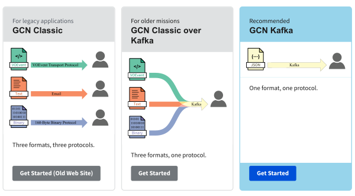
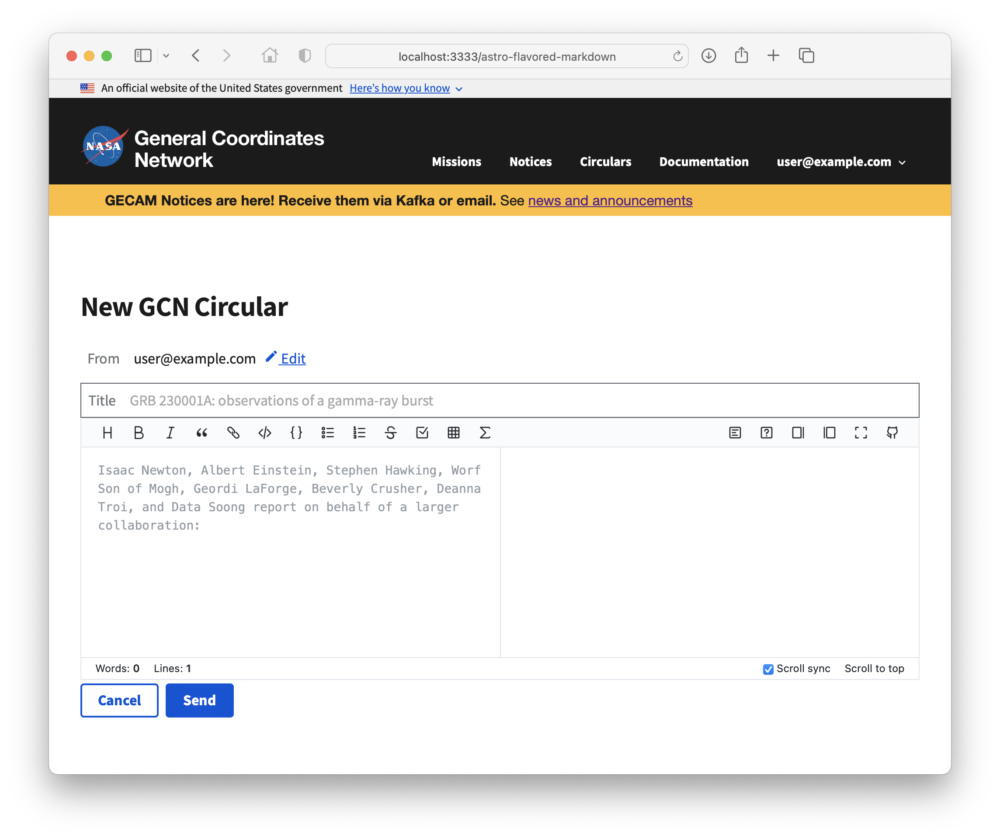

National Aeronautics and
Space Administration
Space Administration
General
Coordinates
Network
NASA’s Next Generation Time-Domain and Multimessenger Alert System
A service of the Astrophysics Science Division at NASA’s Goddard Space Flight Center
Realtime Alerts Born of Necessity

GCN Enabled Seminal Breakthroughs in Astrophysics
There are two kinds of GCN data products:
The Changing Scientific Landscape

The Changing Technological Landscape

Introducing
the new GCN


Why switch to the new GCN?
| GCN Classic | GCN Classic over Kafka | |
|---|---|---|
|
|
NO. Users need to contact administrator in order to make account and subscription changes | YES. Manage your own account and subscription settings through the web site |
|
|
NO. Notices are sent using three custom protocols | YES. Notices are sent using one standard protocol, Apache Kafka |
|
|
NO. Custom software needed to receive notices | YES. Receive notices using open-source software |
|
|
NO. Notices are broadcast by a single server | YES. Notices are broadcast by a cluster of highly-available Kafka brokers in the cloud |
|
|
NO. Notices are sent as plaintext | YES. Notices are protected with SSL/TLS |


Streaming GCN
Notices in Python



Thanks for listening!
Web site: https://gcn.nasa.gov
This presentation: https://nasa-gcn.github.io/gcn-presentation/